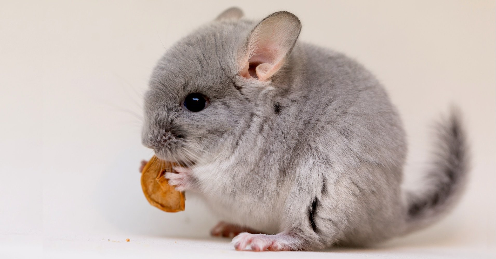

Шиншилла - вид грызунов семейства шиншилловых. Описание и фото шиншиллы.
Забавные зверьки шиншиллы нередко становятся любимыми домашними питомцами многих семей. Это одни из самых интересных грызунов с мягким пушистым мехом и своеобразным характером, которые всегда причислялись к категории диких. К приобретению такого питомца необходимо правильно подготовиться, узнать об особенностях ухода, кормления и других важных нюансах домашнего содержания.
{kind=link}
Описание шиншиллы
Длиннохвостые шиншиллы вырастают в длину не больше, чем до 0,4 метра, при длине хвоста не больше 0,2 метра. Уши длинные, достигающие 6 см в высоту, закругленной формы. В сравнении с телом, голова считается большой, при этом мордочка округлой формы. Глаза сравнительно большие, но симпатичные, с вертикальным расположением зрачков. Усы (вибриссы) достигают длины порядка 10 см. С помощью этих органов, зверьки легко ориентируются в темноте. Взрослые особи весят не больше 1 килограмма, при этом самцы несколько мельче самок.
{kind=link}
Шерсть у шиншилл короткая, на хвосте чуть длиннее. Стандартно, они серого цвета. Существуют еще и белые и чёрные окрасы, получаемые путем скрещивания. Тельце, аккуратное, круглое, мягкое. Задние лапы, значительно крупнее передних. С их помощью, шиншилла с места может прыгнуть очень высоко. Сидят они всегда на задних лапах. Во рту шиншиллы находится 20 зубов, при этом 16 из них являются коренными и растут на протяжении всей жизни.
{kind=link}
Этот грызун интересен тем, что его скелет имеет сходство сжиматься при определенных, особенно угрожающих ситуациях. В случае какой-либо угрозы, этот зверек с легкостью проникает в самую маленькую расщелину. Еще одной уникальной особенностью шиншиллы является тот факт, что зверек практически не потеет, поскольку у него отсутствуют потовые железы. Это означает, что от этого животного не исходит никакого запаха.
{kind=link}
Историческая справка
Шиншиллы не были известны за пределами их природного ареала в Южно Американских Андах до 1500-го года, пока испанцы не покорили местных индейцев. Меха шиншилл были доставлены в Европу как подарки королям. Популярность шиншиллового меха начинается с 1700-х годов и в течение 1800-х годов охотники полностью истребили колонию шиншилл.Чапмен купил шиншиллу и начал все более и более интересоваться этим маленьким животным. После опыта с этой шиншиллой он разработал план заполучить побольше животных и перевезти их в Соединенные Штаты. Поначалу он думал разводить шиншилл в качестве домашних питомцев, а затем созрела идея выращивать шиншилл и для мехового рынка. В 1919 году Чапмен принял решение отловить как можно больше шиншилл чтобы образовать популяцию для разведения.

Характер шиншилл
Характер поведения этих домашних любимцев не содержит агрессии по отношению к человеку. Более того, зверьки ласковые и добродушные. Эти зверьки легко приручаются, поэтому быстро привыкают ходить на лоток. Несмотря на это, у шиншиллы весьма свободолюбивый и независимый нрав, поэтому вряд ли удастся заставить зверька делать то, что ему не нравится. Они способные проявлять упрямство, но кусаются только в редких случаях.
{kind=link}
Поведение зверька связано не только с происхождением, но и с условиями содержания. Нужно обеспечить просторную клетку, качественный корм и достаточный досуг. Первые 2-3 дня зверька нельзя трогать, он должен освоиться в новом месте. После периода адаптации надо начинать налаживать контакт. Можно использовать только ласку и лакомства.
{kind=link}
Иногда пушистики спят вверх ногами. Шиншиллы очень юркие и подвижные. При наличии достаточного пространства, они прыгают на высоту до 2 метров и развивают скорость до 25 км/час.
{kind=link}
Уход за шиншиллой.
Уход за шиншиллами вообще минимальный. Кормят их один раз в день, в вечернее время. Так как шиншиллы ночные зверьки, соответственно весь день спят. В клетке обязательно должна стоять поилка, только с кипяченой водой. Тарелочка для еды – побеспокойтесь о том, чтобы она была керамическая, а не пластмассовая. Так как питомец с легкостью разгрызет пластмассу, проглотит её и погибнет. Кормушка для сена. Пищевой мел, обязательно нужен их организму.Камушек, для стачивания зубов, потому как зубы у шиншилл растут постоянно.
{kind=link}
Для шиншилл нужно выставлять ванночка с песком один раз в неделю, там пушистик будет купаться. Затем убрать. И наполнитель, он продается в любом зоомагазине, древесные гранулы или крупные опилки. Меняется подстилка один раз в неделю. Шиншилла очень аккуратная, в туалет ходит в одно место. Домашняя шиншилла кушает больше травяного корма. Зверюшка с удовольствием съест, но только один кусочек яблочка. Можно дать раз в неделю один орех, или горстку не жареных семечек. Кусочек хлеба ей тоже понравиться. У них в клетке должно быть всегда сено.